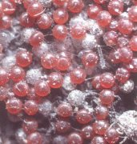
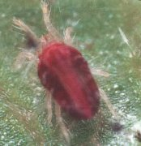
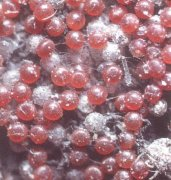
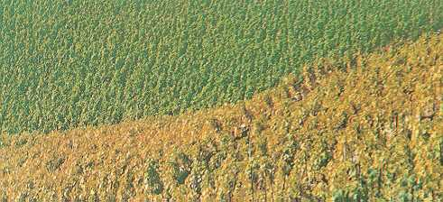

Takácsatkák
Galagonya-takácsatka
Tetranychus viennensis
Erősebb kártételek következtében augusztus közepétől korai
levélsárgulást, lombhullást tapasztalhatunk. Az atkák sűrű szövedékben a levelek
fonákán tartózkodnak. Kéregrepedésekben, lehullott levelek latt gyakran tömegesen
telelnek át, szívogatásuk tavasszal a fiatal leveleken is megfigyelhető, de
kártételük ilyenkor még jelentéktelen.
Piros gyümölcsfa-takácsatka
Panonychus ulmi
Jobbára házikertek kártevője, de üzemi gyümölcsösökben is súlyos károkat okoz. Pete alakban telel, kártételével tavasztól őszig találkozhatunk. Szívogatásuk a levelek fonákán jelentkezik, a többi takácsatkafajtól eltérően szövedéket nem szőnek. A telelő petéket augusztus közepétől folyamatosan rakják le.
Védekezés:
- Fatisztogatás, a lehullott lomb megsemmisítése, közvetlen rügypattanás
előtti lemosó permetezés.
- Atkaölőszeres permetezés.
Javasolt növényvédő szerek:
 |
